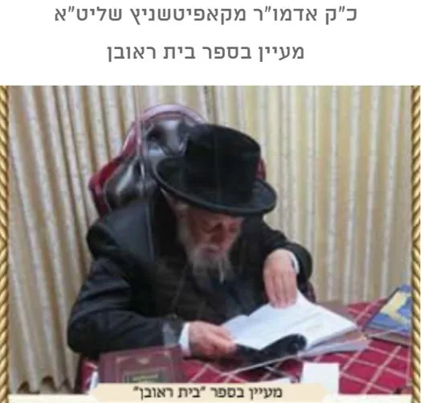
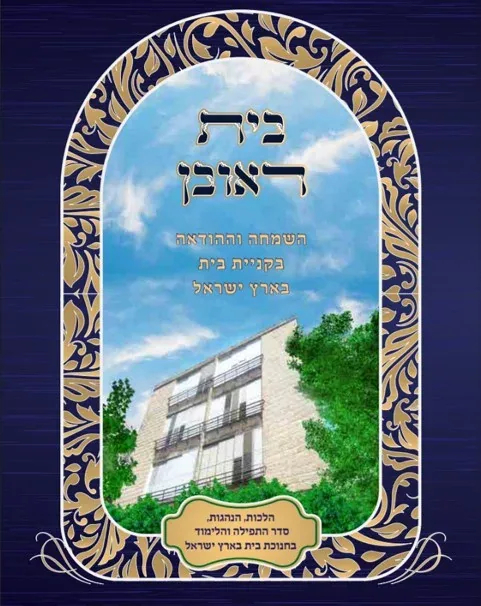

מה מכיל הספר? ומה תוכנו?
מה זה הספר בית ראובן?
בית ראובן - הוא מדריך לקנית בית - בשמחה
- ספר חדש ראשון מסוגו בעולם על המעלה בקנית בית בארץ - יתן לך שמחה ואושר בקניה, תבין לראשונה בחייך איזה מצווה אתה מקיים בקנית בית.
- ספר על הלכות והנהגות חנוכת הבית - יתן לך הדרכה ברורה כיצד להתנהג בסעודת חנוכת הבית
- בספר תמצא סדר לימוד לחנוכת הבית קצר וקולע - כל האורחים יהנו מלימוד פורה ומעניין.
- בספר תלמד על ארץ ישראל בצורה חרדית - להבין את ערכה של ישיבת ארץ ישראל ללא השקפות ציוניות פסולות.
- ספר הכולל תפילות לרכישת בית - יתן לך המון הצלחה ושפע בכל הקניה.
- ספר הכולל סיפורים מרתקים כיצד גדולי ישראל קנו נדל"ן - תפנים שאתה לא נכנסת לעיסקה מתוסבכת, אלא למצווה יקרה.
- ספר הכולל מראי מקומות לסוגית חנוכת הבית - יתן לך גישמע'ק אמיתי בכל ההכנות.
- ספר הכולל קיצור הלכות קנית בית וחנוכת הבית - גם אם אין לך זמן, תוכל ללמוד ולדעת את העיקר בכמה רגעים קטנים.
- ספר עם עריכה גרפית נעימה מאוד - יתן לך קריאה נוחה ורגועה.
- ספר כתוב ברמה קצת עיונית - מתאים יותר לאנשים הרוצים ללמוד דברים לעומק.

מה התוכן של הספר?
הקדמה:
שער א: מעלת קנית קרקע בא"י
שער ב: מצוות קנית בית בא"י
שער ג: מצוות שנה של שמחה
שער ד: מצוות סעודת חנוכת הבית
שער ה: סדר חנוכת הבית
שער ו: מילואים ושו"ת
שער ז: מצוות נטיעת אילנות בא"י
שער ח: סיפורים על ראובן ז"ל

מחיר הספר 30 ש"ח כולל משלוח עד הבית - חינם.